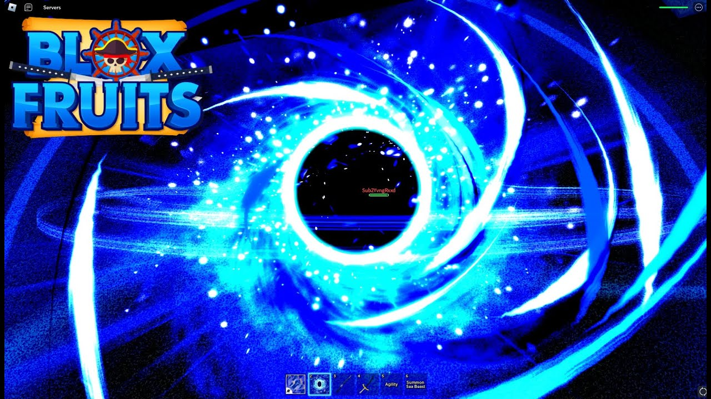

𝒫𝒪ℛ𝒯𝒜ℒ
A Fruta Portal (anteriormente conhecida como Fruta Porta ) é uma Fruta Blox Lendária do tipo Natural , que custa
1.900.000 ou 2.000 no Blox Fruit Dealer . Ícone de dinheiroRobuxIcon
Esta fruta concede ao usuário a habilidade de se teletransportar para qualquer ilha com a habilidade [C] World
Warp , e pode abrir portais na terra e no ar. É conhecida como a melhor fruta Blox para caçar frutas e evitar
caçadores de recompensas . É sem dúvida a melhor fruta para mobilidade e viagens, podendo também ser utilizada
para lutas 1v1 e para combos devido à sua grande movimentação, além da versatilidade de suas habilidades [X] e
[V]. Por causa das habilidades extremamente móveis que o Portal Fruit possui, ele pode evitar atordoamentos
típicos como Rumble , Dough e Buddha

Próxima Página ➻